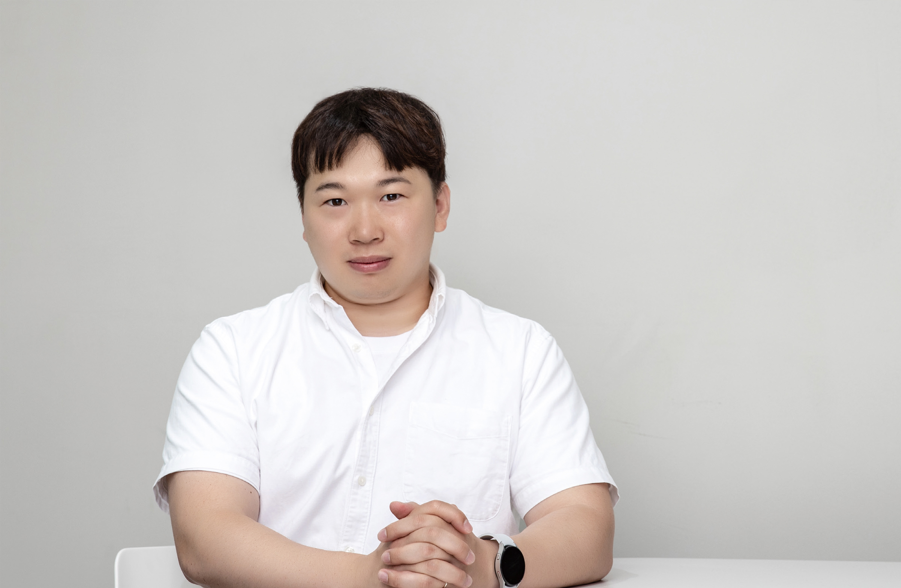

SW,소통의
집약체를 만들다
집약체를 만들다
원익아이피에스 SW팀
SW팀 16명은 ‘CMMI* Level 3’ 획득과 ‘Warp’ 개발, 2개의 프로젝트를 성공적으로 완수했다. ‘지금 꼭 만들어야 한다’는 염원과 지지를 동력 삼아 달려온 시간, 그간의 노력에 중추적인 역할을 해온 4인에게 이야기를 들어본다.
2022 봄호 Vol.67
원익아이피에스 SW팀
SW팀 16명은 ‘CMMI* Level 3’ 획득과 ‘Warp’ 개발, 2개의 프로젝트를 성공적으로 완수했다. ‘지금 꼭 만들어야 한다’는 염원과 지지를 동력 삼아 달려온 시간, 그간의 노력에 중추적인 역할을 해온 4인에게 이야기를 들어본다.
김양진 님
협업 툴, 개발에서 소통에 이르기까지
SW(Software)팀은 지난해 11월 ‘국내 반도체 장비 업계 최초 획득’이라는 타이틀을 만들어 준 반도체 SW 부문 국제 품질 인증 모델인 ‘CMMI*’의 Level 3을 획득했습니다. Level 2는 SW의 품질·위험관리, 프로세스 개선, 요구 사항 분석 등의 SW 개발 역량을 인정받는 것이라면, Level 3는 Level 2의 역량을 조직에 내재화해 SW 개발 및 시스템 품질관리 역량을 잘 뿌리 내리게 하는 것이 관건입니다. 이를 위해 7개의 SW 개발그룹에 소속된 150명의 담당자와 함께 협업 툴인 ‘와이즈 시스템(WISE System)’을 통해 소통과 협업을 강화하고, 팀 내 SW 품질 보증 인원을 내부 심사원으로 두어 사전 평가를 진행하는 등 다각도의 노력을 기울였습니다. 그 결과 내재화에 성공해, Level 3을 획득하며, 대외 인지도와 고객 만족도를 높이는 계기를 마련했습니다.*CMMI 능력성숙도 통합모델
(Cpability Maturity Model Intergration)은 세계 110개 이상의 국가에서 심사가 수행되는 국제 공인 소프트웨어
개발 및 시스템 품질관리 역량 평가 인증 기준이다.
우리의 플랫폼, 새로운 장비 개발에 초석이 될 것입니다.
문현철 님
역할을 바꾸고, 혁신을 더합니다
SW팀의 두 번째 프로젝트는 장비 운영·제어 플랫폼인 ‘Warp(워프)’ 개발입니다. 그동안 원익의 반도체ㆍDisplay 라인에서 사용된 장비의 SW 플랫폼은 외부 업체의 라이선스를 사용해 외부 의존도가 높아 설비 운영에 대한 불안감이 높은 편이었습니다. 이에 ‘지금 꼭, 하루라도 빠르게’ 우리만의 SW 플랫폼을 개발해야 한다는 사명감으로 개발에 임했습니다. 우선 그동안 SW사용에서 제기된 문제점을 파악하기 위해 SW 개발자들의 의견과 제안을 최대한 반영하고자 했습니다. 이는 공정마다 사용하는 장비가 다르고, 플랫폼이 개발된 후에는 무엇보다 일선 현장 구성원들이 편리하게 사용해야 한다는 점에서였어요. 정확성은 물론 신속한 개발이 이뤄져야 한다는 점에서 개발자를 비롯해 현장 실무자들과도 수시로 의견을 공유하며 의사결정 단계는 줄이고 최선의 결정을 내리기 위한 정보 취합 및 대안을 평가하는 방식으로 진행했습니다. 또한 개발자들이 플랫폼을 만들기 전 플랫폼이 사용될 장비에 대한 이해도를 쌓으며 우리만의 독자적인 기술을 더해 Warp가 탄생하게 되었습니다. SW팀은 현장 실무자들의 든든한 파트너로서 미래를 준비하는 구성원이 되고자 Warp를 적용한 새로운 장비 개발에 더 힘쓸 계획입니다.염원과 지지 그리고 결단이 추진력의 바탕이 되었습니다.
원익아이피에스
제어 SW의 핵심, Warp
차광호 님
소통이 SW팀 혁신의 산물입니다.
협력과 소통, 자산이 되다
두 프로젝트의 공통점은 그동안의 업무 수행 방식을 완전히 바꾼, 도전정신이 바탕이 되어 이룬 혁신의 결과입니다. SW팀은 두 프로젝트가 왜 필요한지, 반드시 이뤄야 하는 이유, 개발 시점 등 프로젝트에 대한 인식과 동기부여가 분명했기 에 합심할 수 있었습니다.최유지 님
원익큐엔씨 WQI팀
목표를 달성했다고 해서 안심할 수 없다. 최선을 다해 마지막 허들을 넘어야 진정한 결실을 맺는다. 이번 원익인상 최우수상을 거머쥔 WQI팀이 바로 그렇다. 성장과 발전을 위해 달려온 WQI팀의 4인은 또 다른 결실을 앞두고 있다.
모든 팀원의 헌신과 노력으로
고객에게 긍정적인 경험을 심어 줄 수 있었습니다.
매출 상승 모멘텀을 만들다
원익인상을 통해 원익큐엔씨 미국 현지법인 WQI팀의 성과와 결실을 인정해주셔서 감사합니다. 이번 성과는 ‘신규 툴 개발’과 ‘인텔 전략’으로 이루었습니다. WQI팀은 원익큐엔씨 연구소의 지원과 인텔 PTD(Portland Technology Development) 그룹과의 협력으로 쿼츠 파트를 재설계했습니다. 이 과정에서 툴 개발의 일부 과정이 개선되고, 인텔로부터 원익큐엔씨가 검증된 협력업체임을 인정받았습니다. 또한 2019년부터 2배 이상의 지속적인 매출 증가에 해외 대규모 생산기지 프로젝트 수행으로까지 도약할 수 있었습니다.Mark Dehart 님
원익인상을 통해 성과와 결실을
인정해주셔서 감사합니다.
WQI팀은 인텔 매출 증가를
자랑스러워 하고 있습니다.
Joey Salazar 님
고객과 하나됨으로 니즈를
파악해 효과적으로
이슈 대응에 나섰습니다.
원익인상 수상을 영광스럽게
생각하며, 이는 WQI만이 아니라
미국 현지 법인 전체가 노력한
결과라 생각합니다.
Ross Klobuchar 님 / Freda Shoots 님